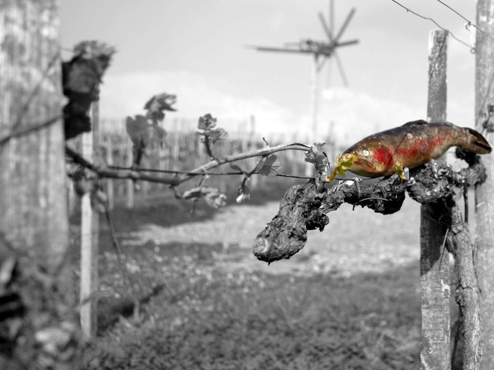

fatMagic
Zwei tolle österreichische Künstler, Wein- und Buschenschankliebhaber in San Francisco, von denen man sicherlich noch viel hören wird.
Weingut
Spezialisiert auf integrationsunwillige Kulturgüter: Wein, Familie und ein Haus, das man betreten muss, um es zu verstehen.

Philosophie
Tattoos, Forellen und Egon. Wie, was, wo? Weinbauernwirtschaft ohne karierttradierte Einheitsromantik, Brettljause ohne Lederhosenschmäh? Keine Angst – nicht einmal das ist hier sicher und genormt. Wenn es Reinmund Reiterer nach der Ledernen ist, lässt er sich auch davon nicht abbringen.
„Eine ganz normale Weinstube“ sei man, trotz designtem Ambiente und kreativ ambitionierter Genießerei. Nichts und rein gar nichts spricht gegen ein neues Verständnis, was sein darf: Weinbauernphilosophie für Unangepasste, ein vollkommen ungruseliger Platz zum Seele-baumeln-Lassen. Die Reiterers haben so einen Platz geschaffen.
„Weil wir anders sind“, sagt Beate einfach – und lässt in ihrem Selbstverständnis keinen Spielraum für Starallüren. Könnte sein, dass ein „animierter Winzer“ wie Reinmund nicht nur zu seinen Reben eine besondere Beziehung hat, sondern auch zu seiner erfrischend liebenswerten Familie. Und zu Egon, Jack R.
Der Wein
Das Klima und ein Höchstmaß an Sonne schaffen die Basis für ganz besondere Weine in Kitzeck. Die Sausaler Urgesteinsböden verleihen eine eigenständig-mineralische Note.
Was einen Winzer ausmacht? Nun ja, alles. Die „animierte Weinbauerei“ von Reinmund Reiterer lebt in der besonderen Beziehung zu seinen Böden. Das sind Jahre des Beobachtens und Spürens, mittendrin Lebens.
Das Ergebnis sind Kitzecker Reiterer-Weine. Anders sind sie halt, aber das ist auch nicht verwunderlich – spätestens, wenn Sie uns einmal kennengelernt haben.
Aus der Weinkarte
„Dem Wein kann man sich auf unterschiedliche Weise nähern. Die Einen verkosten ihn mit der gefühligen Hingabe eines Liebhabers, andere sezieren ihn mit dem Ernst eines Wissenschafters. Den Einen ist er Genuss, den Anderen nur Flüssigkeit. Man kann mit der Trägheit des Satten zum Glas greifen, aber auch mit der Ungeduld des Durstigen. Es gibt welche, die jeden Tropfen chemisch analysieren, andere träumen mit dem Wein. Das sind die Poeten unter den Trinkern.“
August F. Winkler
„Viel Freude mit dem, was ich in Keller und Weingarten bereitet habe – den Liebhabern wie den Wissenschaftern, den Durstigen und den Satten … und allen Poeten.“
Reinmund Reiterer, Weinbau- und Kellermeister
Familie
Reinmund Reiterer ist außerdem Obmann-Stellvertreter des SV Fresing/Kitzeck.


Das Lokal
Emotion und Leidenschaft lassen sich nicht immer so in Worte fassen, wie sie uns bewegen. Vielleicht ist es das Privileg, in dieser Landschaft leben zu dürfen, das uns den Kontakt zu den Menschen erleichtert. Den nicht unwesentlichen Rest erledigt der Raum, den wir für Sie und uns geschaffen haben.
Rund um die Uhr offen für Hausgäste: das Wildererstüberl.
Partner
Zwei tolle österreichische Künstler, Wein- und Buschenschankliebhaber in San Francisco, von denen man sicherlich noch viel hören wird.
Verlässlicher Partner vom Kitzecker Reiterer für Bilder und Fotos.
Befähigter und geprüfter Immobilienmakler – korrekte und seriöse Abwicklung von Kauf und Verkauf von Häusern, Wohnungen, Grundstücken und Bauträgerprojekten sowie Vermietungen.
Reinmund Reiterer ist stolzer Obmann-Stellvertreter des nicht größten, sicher aber sympathischsten Sportvereins der Steiermark.
Dr. Ulrike Erhart, Biochemikerin, hat Marketing in rund 20 Jahren Praxis erlernt – als Prokuristin und Leiterin Marketing und PR acht Jahre im Konzern der Grazer Wechselseitigen, seit 1.1.2009 selbstständig. Corporate Design, Corporate Wording, Markenaufbau, Events, Pressearbeit.
Inge-Morath-Straße 43c, 8045 Graz · 0664 1342929
Pressetext Steirermonat 2009, Beitrag 04/2010 („Buntes Tattoo auf dem Arm und ein Trachtenhemd mit Totenkopfanstecker …“), Bewertung im Alpe-Adria-Gastro-Magazin 28/2010: „Einfach TOLLEST!!! Super Wirtsleute, perfekter Wein – einer der besten seiner Klasse in der Südsteiermark.“
Logos und Druckvorlagen für Vereine und Medien: Logo 2015 und 2015 b, Logo 2014 (für Vereine bitte in Farbe verwenden), Logo 2010, Reiterer-Logo 2010 in Schwarz-Weiß, „Wein aus Kitzeck“-Logo, Inserate „der Kitzecker“ 4/2010 und 2/2010 („Egon – daheim“), Motive „Altmodisch 1“, „Weißwein 1“, „Zigarre 1“ und „Integration“. Die Dateien schicken wir auf Anfrage zu.